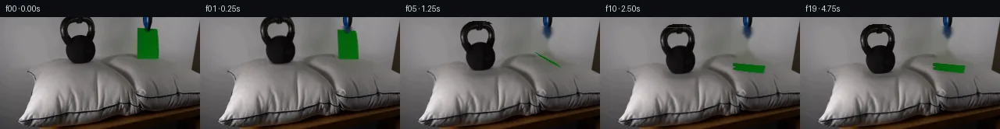

![首帧]()

Round 00
2026-11-05T14:56:23.664848+00:00像素候选变化代码 +264/−0inspection 更新
pixels 1739b1f3310def7e · code 3bd02cf83bdaa23f
查看本轮 generate.py 真实 diff
--- previous/generate.py +++ current/generate.py @@ -0,0 +1,264 @@ +#!/usr/bin/env python3 +"""Generate the 20-frame PixelWorld continuation from local RGB pixels only.""" + +from pathlib import Path + +import cv2 +import numpy as np +from PIL import Image, ImageDraw + +import artifact_io + + +ROOT = Path(__file__).resolve().parent +H, W = 144, 256 + + +def smoothstep(x): + x = np.clip(x, 0.0, 1.0) + return x * x * (3.0 - 2.0 * x) + + +def largest_seeded_component(binary, seed): + """Keep components intersecting a seed mask; useful for RGB-derived mattes.""" + count, labels = cv2.connectedComponents(binary.astype(np.uint8), 8) + ids = np.unique(labels[seed.astype(bool)]) + out = np.zeros_like(binary, dtype=np.uint8) + for idx in ids: + if idx: + out[labels == idx] = 1 + return out + + +def source_mattes(source): + f = source.astype(np.float32) + lum = f.mean(axis=2) + + # The dark object is isolated relative to same-row wall samples. A seeded + # connected component avoids including the open center of its handle. + side_samples = np.concatenate((lum[:, 62:72], lum[:, 132:142]), axis=1) + wall_by_row = np.median(side_samples, axis=1)[:, None] + roi = np.zeros((H, W), np.uint8) + roi[0:62, 72:130] = 1 + dark = ((wall_by_row - lum) > 16.0) & (roi > 0) + dark = cv2.morphologyEx(dark.astype(np.uint8), cv2.MORPH_CLOSE, + np.ones((3, 3), np.uint8), iterations=2) + seed = np.zeros((H, W), np.uint8) + seed[0:57, 77:123] = 1 + seed &= (dark > 0).astype(np.uint8) + kettle_binary = largest_seeded_component(dark, seed) + kettle_binary = cv2.morphologyEx(kettle_binary, cv2.MORPH_CLOSE, + np.ones((3, 3), np.uint8), iterations=1) + kettle_alpha = cv2.GaussianBlur(kettle_binary.astype(np.float32), (0, 0), 0.65) + kettle_alpha = np.clip(kettle_alpha, 0, 1) + + # The paper is the only large, strongly green connected component. + r, g, b = [f[:, :, i] for i in range(3)] + green = (g > 55) & (g > 1.55 * r) & (g > 1.45 * b) + green = cv2.morphologyEx(green.astype(np.uint8), cv2.MORPH_CLOSE, + np.ones((3, 3), np.uint8), iterations=2) + seed = np.zeros((H, W), np.uint8) + seed[13:55, 173:206] = 1 + seed &= green + paper_binary = largest_seeded_component(green, seed) + paper_binary = cv2.morphologyEx(paper_binary, cv2.MORPH_CLOSE, + np.ones((3, 3), np.uint8), iterations=1) + paper_alpha = cv2.GaussianBlur(paper_binary.astype(np.float32), (0, 0), 0.55) + paper_alpha = np.clip(paper_alpha, 0, 1) + return kettle_alpha, paper_alpha + + +def clean_plate(source, kettle_alpha, paper_alpha): + remove = ((kettle_alpha > 0.06) | (paper_alpha > 0.06)).astype(np.uint8) * 255 + remove = cv2.dilate(remove, np.ones((5, 5), np.uint8), iterations=1) + # Telea is used only to reconstruct the locally textured wall/pillow that + # is hidden in frame 00; no external pixels or models are involved. + return cv2.inpaint(source, remove, 5, cv2.INPAINT_TELEA) + + +def deform_pillows(plate, left_depth, right_depth): + yy, xx = np.mgrid[0:H, 0:W].astype(np.float32) + + # A downward displacement field has its maximum at each contact surface + # and smoothly returns to zero at pillow sides and lower seam. + gx_l = np.exp(-0.5 * ((xx - 102.0) / 25.0) ** 2) + gy_l = np.exp(-0.5 * ((yy - 72.0) / 35.0) ** 2) + lower_taper = np.clip((142.0 - yy) / 55.0, 0.0, 1.0) + active_l = np.clip((yy - 43.0) / 14.0, 0.0, 1.0) * lower_taper … diff truncated; 177 more lines …